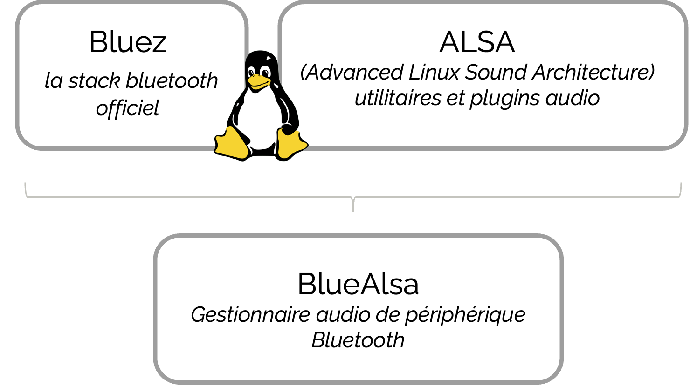

Bluetooth
Il existe plusieurs manières de connecter un périphérique en Bluetooth sur un OS Linux. Si vous utilisez pulseaudio ou pipewire, cette page ne sera pas nécessaire, car elle s'appuie sur l'utilisation de Bluealsa.
Bluealsa c'est quoi ?
Bluealsa, c'est l'utilisation commune de BlueZ la stack officiel de Linux qui permet l'utilisation du Bluetooth et de ALSA un utilitaire pour configurer et utiliser des cartes audios. Finalement leurs utilisations communes permettent de gérer des périphériques Bluetooth audio.

Configuration d'un périphérique Bluetooth
Avant de contrôler notre bateau par la commande vocale et un équipement Bluetooth, il faut connecter l'équipement avec les commandes fournies par BlueZ. Le protocole est assez simple, il s'agit des mêmes étapes qu'avec l'utilisation d'une IHM mais avec des lignes de commandes.
$ bluetoothctl scan on # permet de trouver notre équipement
$ bluetoothctl trust <MAC_ADRESSE> # de lui faire confiance
$ bluetoothctl pair <MAC_ADRESSE> # de se lier à lui
$ bluetoothctl connect <MAC_ADRESSE> # de s'y connecter
Maintenant que l'on est connecté nous allons créer un fichier de configuration alsa pour utiliser notre casque comme périphérique par défaut. Ce fichier de configuration est à créer sous le nom de ~/.asoundrc.
# device configuration
pcm.btreceiver {
type plug
slave.pcm {
type bluealsa
device "MAC_ADRESSE"
profile "sco" # utilisation du profil HSP/HFP
}
hint {
show on
description "Bluetooth Receiver"
}
}
# default device
pcm.!default {
type plug
slave.pcm "btreceiver"
}
Il est important d'utiliser le profil sco qui en réalité n'en est pas un, mais un protocole de communication utilisé par le profil HSP/HFP. Cette mention indique alors qu'on utilise les bons profils.
Le HSP/HFP ne sont pas les profils qui utilisent les meilleurs codecs pour une qualité optimale, cependant on utilise que le microphone donc cela n'est pas dérangeant. De plus certains profils comme l'A2DP fonctionne uniquement en playback, le microphone n'est pas utilisable. Il est important de configurer notre équipement avec ces profils pour un bon fonctionnement.